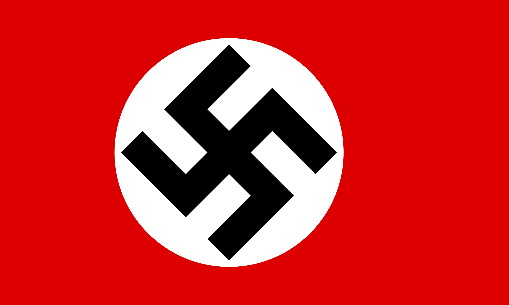
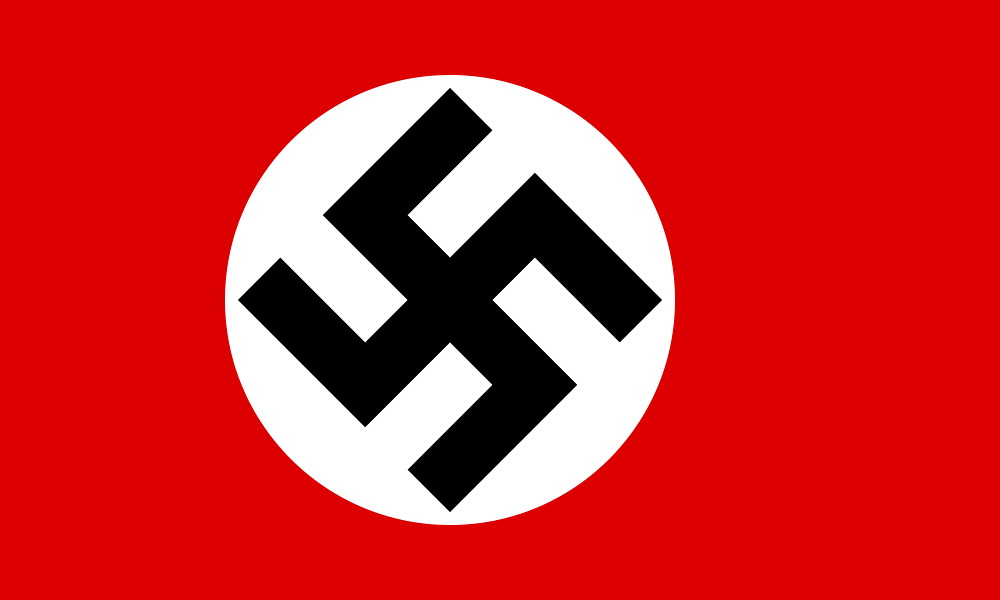

Using this buttuns you can switch between 5 mose important people in Word War 2!
Once you are on the people page, click on the charachter to get more infrmation!
Press Start to Begin

 

Winston Churchill
Age: 91
Born: November 30, 1874
Death: January 24, 1965
Location: United Kingdom
Description:
Winston Churchill was one of the best-known, and some say one of the greatest, statesmen of the 20th century. Though he was born into a life of privilege, he dedicated himself to public service.He was an idealist and a pragmatist; an orator and a soldier; an advocate of progressive social reforms and an unapologetic elitist; a defender of democracy – especially during World War II – as well as of Britain’s fading empire. But for many people in Great Britain and elsewhere, Winston Churchill is simply a hero.

Franklin D. Roosevelt
Age: 63
Born: January 30, 1882
Death: April 12, 1945
America
Description:
Franklin D. Roosevelt was in his second term as governor of New York when he was elected as the nation’s 32nd president in 1932.His ambitious slate of New Deal programs and reforms redefined the role of the federal government in the lives of Americans. Reelected by comfortable margins in 1936, 1940 and 1944, FDR led the United States from isolationism to victory over Nazi Germany and its allies in World War II.e spearheaded the successful wartime alliance between Britain, the Soviet Union and the United States and helped lay the groundwork for the post-war peace organization that would become the United Nations.
Adolf Hitler
Age: 56
Born: April 20, 1889
Death: April 30, 1945
Location: Germany
Description:
Adolf Hitler, the leader of Germany’s Nazi Party, was one of the most powerful and notorious dictators of the 20th century. Germany’s invasion of Poland in 1939 led to the outbreak of World War II, and by 1941 Nazi forces had occupied much of Europe. After the tide of war turned against him, Hitler committed suicide in a Berlin bunker in April 1945.
Joseph Stalin
Age: 75
Born: December, 18, 1878
Death: March 5, 1953
Location: Soviet Union
Description:
Joseph Stalin (1878-1953) was the dictator of the Union of Soviet Socialist Republics (USSR) from 1929 to 1953. Under Stalin, the Soviet Union was transformed from a peasant society into an industrial and military superpower. Stalin aligned with the United States and Britain in World War II (1939-1945) but afterward engaged in an increasingly tense relationship with the West known as the Cold War (1946-1991).

Benito Mussolini
Age: 62
Born: July,29, 1883
Death: April 28, 1945
Location: Italy
Description:
Italian dictator Benito Mussolini (1883-1945) rose to power in the wake of World War I as a leading proponent of Facism. Mussolini allied himself with Hitler, relying on the German dictator to prop up his leadership during World War II, but he was killed shortly after the German surrender in Italy in 1945.